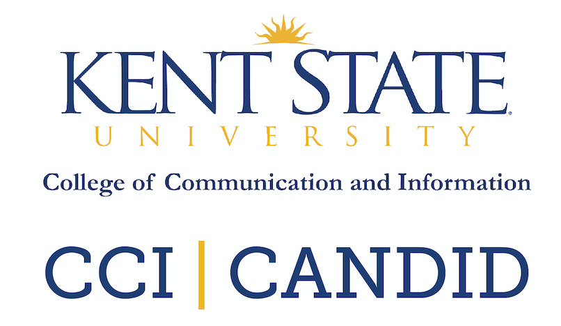
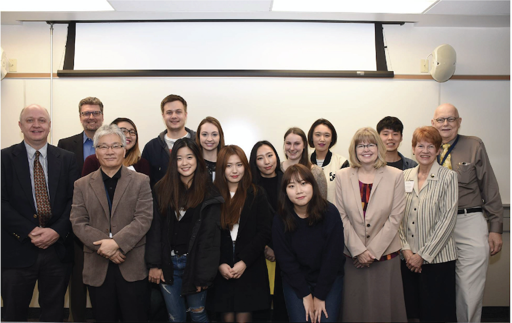
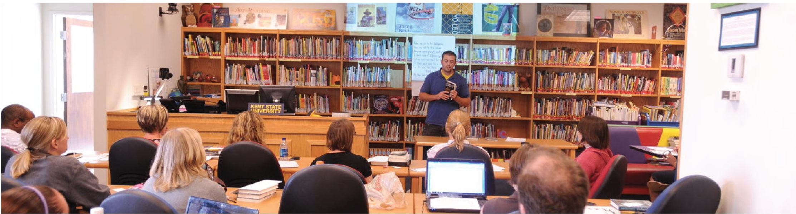

CONNECT WITH US |
|  | ||
Friday, Oct. 30th, 2015Students, Administrators from Sichuan University in China Visit College

Students and faculty from the College of Literature and Journalism of Sichuan University in Chengdu, China, are rising the College of Communication and Information. The representatives have toured the university’s Kent campus, met with the CCI Dean Amy Reynolds, Ph.D., and sat in on classes in the School of Communication Studies and the School of Journalism and Mass Communications.
Points of PrideAn article by SLIS Assistant Professor Marianne Martens, Ph.D., “Gaming the Reading Experience: Book-related Social Spaces for Young Children,” was published in the special issue of Digital Youth 2(4), p. 29-40, in September 2015. The idea for this peer- reviewed, special issue on Digital Youth came out of the digital Youth Research Network, which has held pre-conference workshops at the Conference over the last three years.  Students/Alumni SuccessSLIS alumnus Alfred Bernardo, M.L.I.S. ’15, has accepted a position as the user services librarian at the Allen Memorial Library at Valley City State University in Valley City, N.D. SLIS user experience design (UXD) student Tasha Malkovich was on the third place team at the Cleveland Medical Hackathon in September 2015. Malkovich was a design thinker and developer on their Watershed Health Project, which examined the Cuyahoga County Board of Health paper-based process o monitoring water quality to prevent the transmission of waterborne diseases. NewsTiger Legacy: Kent State Professors Turn Long-Term Storytelling Project Into Educational Opportunity
An article by SLIS Assistant Professor Marianne Martens, Ph.D., “Gaming the Reading Experience: Book-related Social Spaces for Young Children,” was published in the special issue of Digital Youth 2(4), p. 29-40, in September 2015. The idea for this peer-reviewed, special issue on Digital Youth came out of the digital Youth Research Network, which has held pre-conference workshp[s at the Conference over the last three years.
Important Dates
Global Communication Issues Forum on the refugee Crisis in the Middle East and Europe |
|
|
Credits / Contact Meghan Caprez, Managing Editor - College of Communication and Information Kent State University | 330-672-1960 | mcaprez@kent.edu Contact us with comments or suggestions at ccikent@kent.edu. Special thank to CCI Kent State marketing assistant Amanda Azzarelli, Morgan Barba, Erica Batyko, Eline Concepcion, Anna Hoffman, Patrick Hogan, Alex Ledet and Gabrielle Woodard for contributing to this publication. To reach the team, email ccikent@kent.edu or visit the marketing team Web page. |
|
|
|